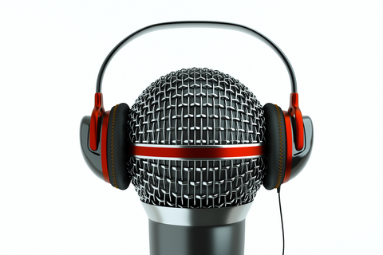

En surfant sur la Toile ou en écoutant les infos à la radio, en prêtant l’oreille aux débats sur la loi Hadopi ou en suivant
l’actualité de ces soulèvements qu’on a appelé le «printemps arabe» en Tunisie ou le «printemps érable» au Québec, n’avez-vous
jamais eu le sentiment qu’un «nouveau monde» s’oppose aujourd’hui sous bien des aspects à un «vieux monde» ? Et que la culture
de ce «nouveau monde», qu’on pourrait qualifier de numérique pour résumer son vecteur principal, semble se heurter sans cesse
aux valeurs, aux façons de faire et de décider, aux modes de vie et surtout aux codes d’autorité traditionnels de nos sociétés
occidentales ?
Déjà, au début des années soixante, Marshall Mc Luhan affirmait dans une phrase fameuse devenue presque un cliché :
«Le message c’est le médium»… Une culture s’apparente à un langage, à des formes de relation et de transmission autant
qu’à des objets culturels en tant que tels. Selon l’intuition de Mc Luhan et d’autres penseurs et sociologues comme Gilbert Simondon,
une culture se construit, sans même que nous le réalisions au quotidien, à la faveur de nos pratiques des médias comme plus largement
de tous nos artéfacts. C’est bien pourquoi la radio, la télévision, les jeux vidéo et maintenant l’immense vague de l’Internet ont
transformé et chamboulent encore notre culture ou plutôt nos cultures. Car nous appartenons de moins en moins à «une» culture, et
de plus en plus à «plusieurs» cultures, les unes prenant le pas sur les autres en fonction de l’éducation, des milieux sociaux, des
générations, mais aussi et surtout pour un seul et même individu selon ses situations et moments de vie.
Ce constat d’une multitude de cultures qui cohabitent en nous comme dans la société telles des forces contraires ou
complémentaires, est l’un des enseignements majeurs à tirer des réflexions de Serge Tisseron, depuis une vingtaine d’années
observateur mais aussi acteur de notre nouveau monde numérique…

La culture numérique nous semble indissociable de ses supports, donc des écrans de la télévision comme surtout de l’ordinateur,
du laptop, de la tablette tactile et maintenant du smartphone… Cette culture numérique qui est celle des nouvelles générations
se confond-elle pour autant à une culture des écrans ?
"La culture des écrans, elle existe depuis que les êtres humains fabriquent des images ou du moins regardent des écrans, alors
que la culture numérique est associée à l'invention, à l’explosion d'Internet et de ce qu’on a appelé le Web 2.0. Je crois que
la culture numérique est ce qui est en train d'affranchir la culture des écrans de la référence du livre."
On peut aussi prendre exemple sur le groupe daft punk, Ils font partie des artistes français s'exportant le mieux à l'étranger,
Il ont style tres electronique, a un tel point que dans la plupart des morceau on ne distingue aucune phrase distinct tellement ils usent de son electronique.
l
On peut aussi prendre exemple sur le groupe daft punk, Ils font partie des artistes français s'exportant le mieux à l'étranger,
Il ont style tres electronique, a un tel point que dans la plupart des morceau on ne distingue aucune phrase distinct tellement ils usent de son electronique.